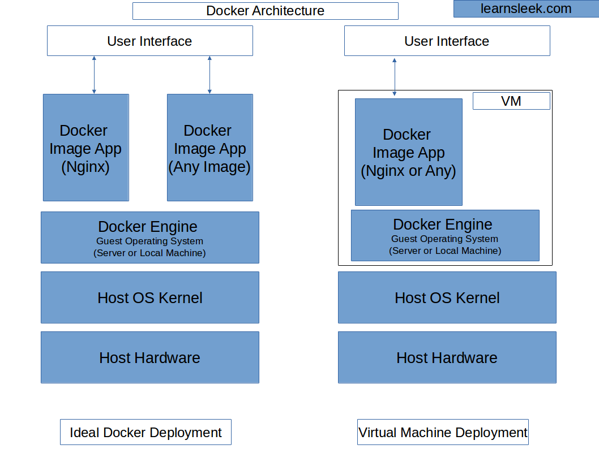
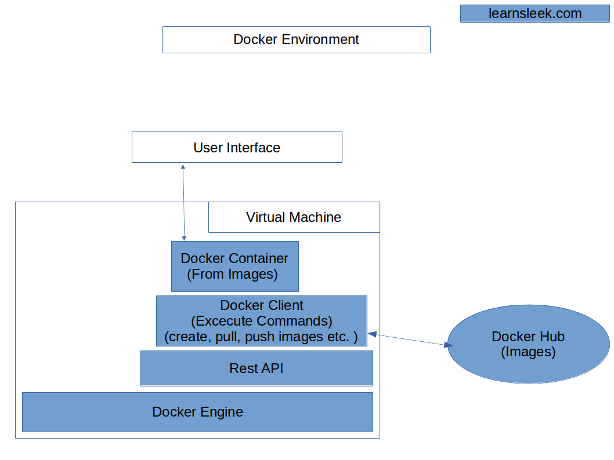
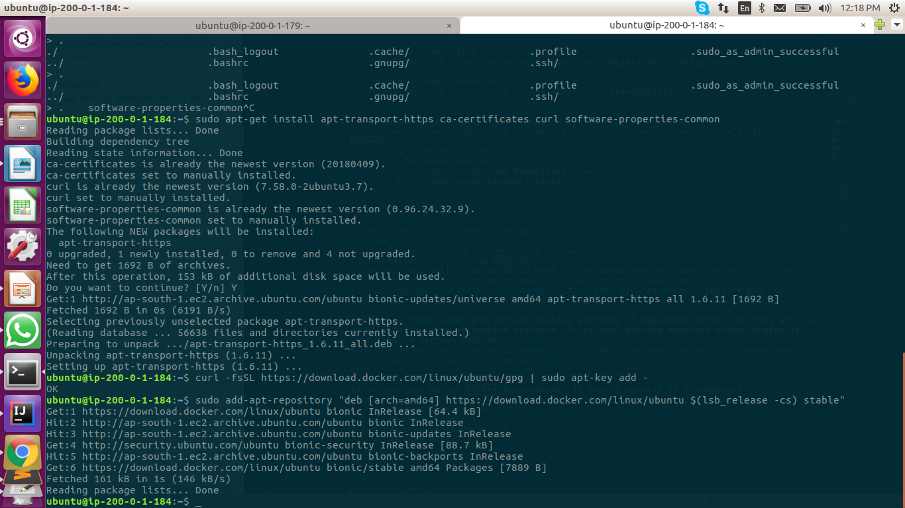

In the last artlcle we dicussed what is container and containerization. link
The figure shows ideal and Virtual Machine approach of deploying docker. In this article we will follow Virtual Machine approach. In virtual machine approach docker engine is installed on Virtual Machine.
In the picture we see Docker Environment. It mainly consist of 4 component
Docker Engine :- Docker Engine is a client-server application and has following components: a. A server which is a type of long-running program called a daemon process. b. A REST API which specifies interfaces that programs can use to talk to the daemon. c. A command line interface (CLI) client.
Docker Images :- Docker images are the "source code" for our containers, we use them to build containers.Your image is is a set of layers as you describe.
Docker Containers :- An instance of an image is called a container. Containers are the organizational units of Docker. When we build an image and start running it, we are running in a container. It can be shipped transfered as a executable and run on any docker environment.
Docker Hub :- Docker stores the images we build in registries. There are public and private registries. Docker company has public registry called Docker hub, where you can also store images privately.
To explain architecture, environment, install docker and run a nginx container.
A Virtual Machine from any cloud provider. In this case we are using ec2 instance from amazon.
1. Update the apt package index:
$ sudo apt-get update
2. Install packages to allow apt to use a repository over HTTPS:
$ sudo apt-get install apt-transport-https ca-certificates curl software-properties-common
3. Add Docker’s official GPG key:
$ curl -fsSL https://download.docker.com/linux/ubuntu/gpg | sudo apt-key add -
4. Use the following command to set up the stable repository. You always need the stable repository, even if you want to install builds from the edge or test repositories as well. To add the edge or test repository, add the word edge or test (or both) after the word stable in the commands below.
$ sudo add-apt-repository "deb [arch=amd64] https://download.docker.com/linux/ubuntu $(lsb_release -cs) stable"
Note: The lsb_release -cs sub-command below returns the name of your Ubuntu distribution, such as xenial. Sometimes, in a distribution like Linux Mint, you might have to change $(lsb_release -cs) to your parent Ubuntu distribution. For example, if you are using Linux Mint Rafaela, you could use trusty.
 1. Update the apt package index:
$ sudo apt-get update
2. Install the latest version of Docker CE, or go to the next step to install a specific version. Any existing installation of Docker is replaced.
$ sudo apt-get install docker-ce
Check your installation by using docker -v. If you have docker installed successfully. you will get version of docker installaed